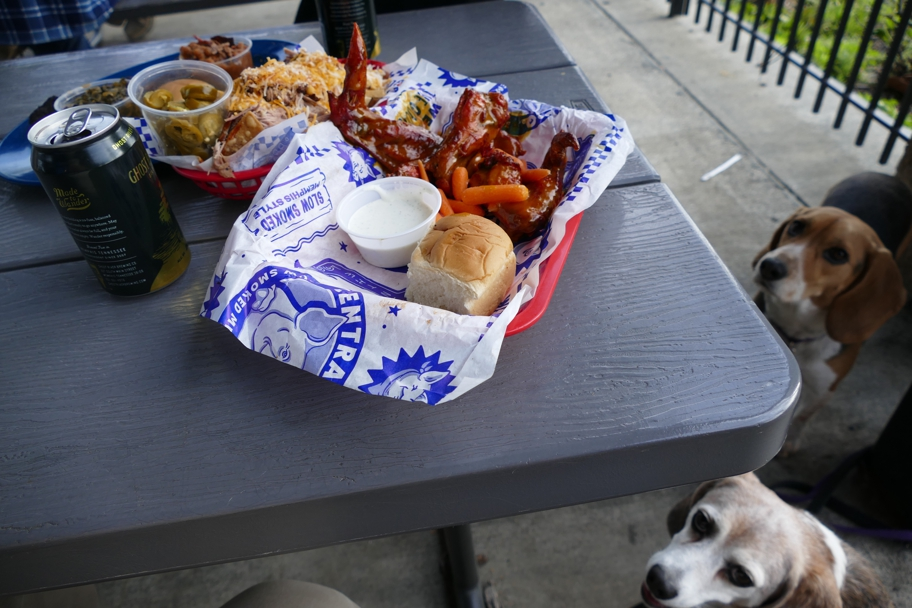

Not only did Memphis' Central Barbecue have outstanding food, it had a dog-friendly patio! Seen here are Memphis honey gold chicken wings (Memphis is at least as much a wing town as a BBQ town) and pulled pork nachos, also a Memphis specialty. There were also memorable Memphis-stye dry-rub ribs. It was memorable in a different way that Central's patio looks right onto the Lorraine Motel.
Halley Beagle Memphis Tennessee Wallace Beagle